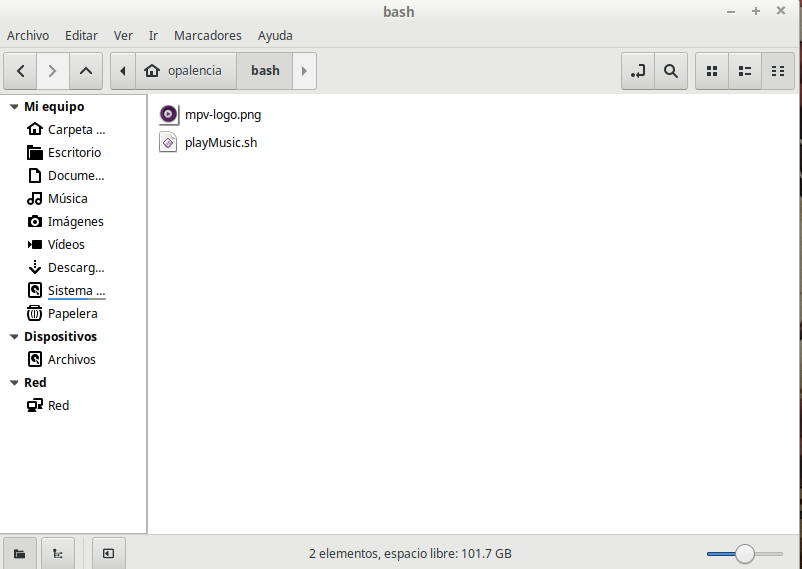
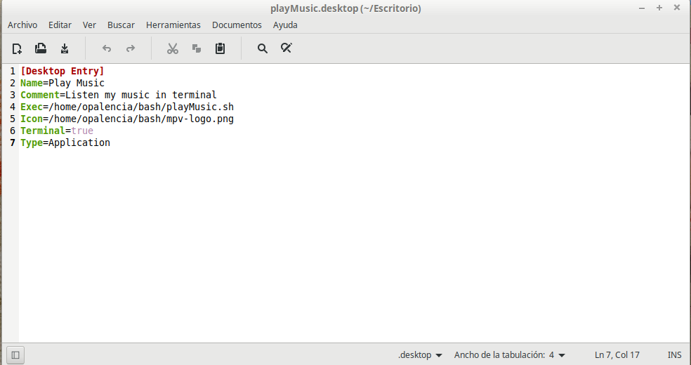

Reproducir música desde la terminal¶
El nombre de este reproductor de música y video se llama “mpv” y funciona desde la terminal.
Esto es algo fuera de lo común, pero solo me tomó un día usándolo para darme cuenta que para escuchar música es todo lo que necesito e inmediatamente dejé de usar mis antiguos reproductores de música. A cualquier persona le puede parecer absurdo escuchar música desde la terminal, habiendo tantos reproductores de música y video en el mercado con excelentes interfaces gráficas; pero habemos personas únicas y especiales que vamos más alla de lo común y ordinario, para todos ustedes es que escribo este pequeño tutorial.
¿Cómo lo instalo en mi distro?
En este enlace está la documentación oficial de instalación:
Y en este enlace está la documentación oficial de cómo usarlo:
Ventajas
Es liviano
Es fácil de usar
No muestra notificaciones de la canción que está sonando. Para mí esto es perfecto, hay otras notificaciones importantes que necesito escuchar y ver como las del correo electrónico, algún sitio web que uso, entre otras.
Se puede personalizar al gusto del usuario
Desventajas
Para pausar, reanudar, cambiar una canción hay que posicionarnos en la ventana de la terminal que está reproduciendo la música.
No le he econtrado otras desventajas, esto dependerá de cada usuario.
Reproducir música con mpv dando dos clics del ratón o un simple enter del teclado
Primero hay que confirmar que la instalación de mpv haya sido satisfactoria. Para ello solo es necesario abrir una terminal y escribir “mpv” y dar un enter, si se instaló correctamente, aparecerá la versión del reproductor y otros datos.
Crear una carpeta que se llame “bash” en el usuario actual que inició sesión, es decir, en “/home/nombreusuario/bash” y crear ahí un archivo llamado “playMusic.sh” el cual va a contener el siguiente comando:
#!/bin/bash
# play my music in terminal
mpv --shuffle --no-video /home/opalencia/Música/
Reemplazar “/home/opalencia/Música/” por el lugar en donde guardas tu música.
“mpv –shuffle –no-video /home/opalencia/Música/”, este comando lo que hace es que reproduce toda la música en forma aleatoria y que no me muestre los álbunes que traen algunas canciones. Unas canciones traen archivos de imágenes con sus álbunes ya sea integrados o separados, para mi gusto no quiero estar viendo en una ventana aparte dicha imagen, por eso es que le agrego el parámetro “–no-video”.
Dar permisos de ejecución al archivo recién creado. Para ello, abrir una terminal y hacer un “cd” a la carpeta recién creada y escribir el siguiente comando:
$ chmod +x playMusic.sh
Abrir un editor de texto y escribir lo siguiente para crear un lanzador, llamar al archivo “playMusic.desktop” y guardarlo en el escritorio:
[Desktop Entry]
Name=Play Music
Comment=Listen my music in terminal
Exec=/home/opalencia/bash/playMusic.sh
Icon=/home/opalencia/bash/mpv-logo.png
Terminal=true
Type=Application
Los parámetros “Exec” e “Icon” serán diferentes para cada usuario, es el lugar en donde está guardado el archivo bash y el ícono que vamos a usar, para el icono descarga cualquier imagen que desees o la que sugiero.
Dar permisos de ejecución al lanzador recién creado. Para ello, abrir una terminal y hacer un “cd” al escritorio y escribir el siguiente comando:
$ chmod +x playMusic.desktop
Ahora solo faltará dar dos clics con el ratón o un enter con el teclado al lanzador que creamos en el escritorio cada vez que querramos escuchar música.
Leer la documentación de cómo usar el teclado y el ratón para desplazarse por las diferentes canciones, aquí dejo las teclas del teclado que yo uso:
TECLADO
Barra espaciadora: detener y reanudar una canción
Shift + > “mayor que” : reproducir la siguiente canción
< “menor que”: reproducir la canción anterior
> “tecla desplazamiento derecha” : aumentar la velocidad de una canción uno segundos adelante
< “tecla desplazamiento izquierda” : disminuir la velocidad de una canción unos segundos atrás
“q” letra q para salir y dejar de esuchar música
Aquí puedes descargar los archivos que utilizo yo, con el fin de comprobar que hayamos escrito bien todo.